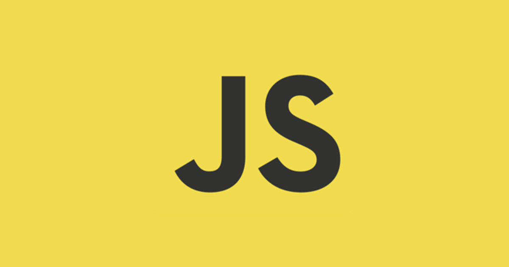

OBJETIVOS
O grupo Invasive Team tem como objetivos na disciplina SI401 (Programação para a WEB) se tornar profissionais de TI que possuem as competencias necessarias para criação de sites. Essa disciplina é ministrada na Faculdade de Tecnologia da UNICAMP pelo professor Guilherme Coelho
Para poder tornar esse objetivo relidade o grupo ira aprender as principais linguagens de marcação e estilo ao longo do segundo semestre de 2018, sendo estás: HTML; CSS; JavaScript e PHP.
Para que esse aprendizado seja eficiente eles realizaram quatro trabalhos praticos, sendo que este é o primeiro deles.
Linguagens Utilizadas na Disciplina

HTML
HTML é um editor de hipertextos, muito utilizado para criação de páginas online e aplicações de web. Em conjunto com o CSS e Javascript, eles formam as pedras principais para a World Wide Web. Todos os navegadores atuais recebem documentos em HTML que são processados renderização e apresentação do conteúdo online. O nome HTML é uma abreviação para a expressão inglesa de HyperText Markup Language.

CSS
Cascading Style Sheets (CSS) é um mecanismo para adicionar estilo (cores, fontes, espaçamento, etc.) a um documento web. Em vez de colocar a formatação dentro do documento, o CSS cria um link para uma página que contém os estilos. Quando quiser alterar a aparência do portal, basta modificar apenas um arquivo. Com a variação de atualizações dos navegadores, o suporte ao CSS pode variar.

JavaScript
JavaScript é uma linguagem de programação interpretada. Foi originalmente implementada como parte dos navegadores web para que scripts pudessem ser executados do lado do cliente e interagissem com o usuário sem a necessidade deste script passar pelo servidor, controlando o navegador, realizando comunicação assíncrona e alterando o conteúdo do documento exibido.É baseada em ECMAScript padronizada pela Ecma.